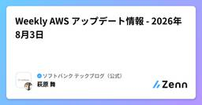

ソフトバンク テックブログ（公式）のフィード
https://zenn.dev/p/softbank
ソフトバンクのエンジニアが、ソフトバンクの業務・サービスを支える技術をテーマに、現場の知見や取り組みを発信する技術ブログです。 2026年３月以前のブログ https://www.softbank.jp/biz/blog/cloud-technology/
フィード

OpenAIのWeb検索APIが画像も検索できるようになった
ソフトバンク テックブログ（公式）のフィード
ソフトバンクのCHENです。普段は、データ構造化ツール「TASUKI Annotation」の技術研究＆全社RAG基盤に携わっています。あわせて生成AI・エージェント技術の探索にも取り組み、実務投入を見据えた技術検証を行っています。本記事では、OpenAI の Web検索ツール（web_search）が新たに画像も返せるようになった点を、実際にAPIを叩いて検証しました。 TL;DR使い方：web_search に search_content_types と image_settings を追加するだけで、画像URL・出典ページURL・サムネイルがまとめて返ってきます。...
1日前
ユーザーはなぜ迷うのか？アフォーダンスとシグニファイアで考える設計 1
1
ソフトバンク テックブログ（公式）のフィード
はじめに「これ、押せるの？」Webサービスやアプリを使っていて、そんなふうに手が止まったことはないでしょうか。リンクなのか、ただのテキストなのか。カード全体がクリックできるのか、ボタンだけなのか。アイコンは何を意味しているのか。機能としては存在しているのに、ユーザーに「使える」と伝わっていないUIは意外と多くあります。この “使えるのに気づくことができない“ 問題を考えるうえで役立つのが、 アフォーダンス と シグニファイア という考え方です。この記事では、この 2 つの違いを整理しながら、ユーザーを迷わせないUIを作るために何を意識すればよいのかを考えていきます。...
3日前

Geminiで「スライドにエクスポート」がエラー？Drive SDK制限下のスマートなワークアラウンド その２
ソフトバンク テックブログ（公式）のフィード
組織のセキュリティポリシーやGoogle Drive SDK制限により、Gemini アプリからの「スライドにエクスポート」機能がエラーになって使えない……という問題、遭遇したことはありませんか？前回の記事「Geminiで「スライドにエクスポート」がエラー？Drive SDK制限下のスマートなワークアラウンド その１」では、PDFを経由するワークアラウンドを実施しました。!前回の振り返り（PDF方式）メリット: デザインが整った綺麗な資料ができる。デメリット: 時間がかかる上、後からGoogle スライド上で文字や配置を編集できない。今回は、「デザインの品質を維...
3日前

Weekly Google Cloud アップデート情報 - 2026年8月4日
ソフトバンク テックブログ（公式）のフィード
Weekly Google Cloud アップデート情報 - 2026年8月4日 ～ Gemini Enterprise: Microsoft Teams 連携検索コネクターの一般提供開始 ～皆さま、こんにちは。先週 (2026/07/24 - 2026/07/30) の主な Google Cloud（旧GCP）のアップデート情報を紹介します。※本記事の引用元:Google Cloud リリースノート 注目のアップデートGemini Enterprise: Microsoft Teams 連携検索コネクターの一般提供開始Microsoft Teams 連携検索データス...
5日前

Weekly AWS アップデート情報 - 2026年8月3日
ソフトバンク テックブログ（公式）のフィード
皆さま、こんにちは。Weekly AWSでは、毎週 AWS プロダクトのアップデート情報をお届けしています。それでは、先週 (7月27日～8月2日) の主な AWS アップデート情報を紹介します。 今週の注目アップデート IAM Policy Simulator の機能が強化され、IAM コンソールに統合AWS Identity and Access Management (IAM) の IAM Policy Simulator が大幅にアップデートされ、IAM コンソールに統合されました。これにより、ID とポリシーを管理する場所と同じ場所で、デプロイ前に IAM ポリ...
5日前

JC-STAR★3とは？制度の現在地と公開されている内容をざっくり解説
ソフトバンク テックブログ（公式）のフィード
スマートビル、工場、公共施設、重要インフラなどで利用されるIoT（Internet of Things、モノのインターネット）製品では、単に「インターネットにつながる」だけでなく、長期運用を前提としたセキュリティ対策が求められます。前回の記事では、IoT製品共通の最低限のセキュリティ要件である「JC-STAR ★1（レベル1）」について解説しました。前回記事：「JC-STAR」とは？～★1取得の進め方と通信の役割をざっくり解説（2025年9月公開）今回はその続編として、より高い信頼性が求められる「JC-STAR ★3（レベル3）」について、制度上の位置付け、申請方法、対象製品、取得...
11日前
Weekly Google Cloud アップデート情報 - 2026年7月28日
ソフトバンク テックブログ（公式）のフィード
Weekly Google Cloud アップデート情報 - 2026年7月28日皆さま、こんにちは。先週 (2026/07/17 - 2026/07/23) の主な Google Cloud（旧GCP）のアップデート情報を紹介します。※本記事の引用元:Google Cloud リリースノート 注目のアップデートGemini Enterprise: グローバルリージョンで Gemini 3.6 Flash が利用可能にGemini 3.6 Flash はグローバルリージョンで利用可能になりました。Gemini Enterprise アプリでユーザーが Gemini 3...
12日前
Weekly AWS アップデート情報 - 2026年7月27日
ソフトバンク テックブログ（公式）のフィード
皆さま、こんにちは。Weekly AWSでは、毎週 AWS プロダクトのアップデート情報をお届けしています。それでは、先週 (7月20日～26日) の主な AWS アップデート情報を紹介します。 今週の注目アップデート Amazon SES が料金プランを導入Amazon Simple Email Service (SES) は、料金プランを導入しました。これにより、顧客は機能を個別に評価することなく、簡単に購入してアクセスできます。料金プランには「Essentials」「Pro」「Enterprise」の3つの階層的なオプションがあり、アラカルト価格と比較して割引価格で...
12日前
Weekly Azure アップデート情報 - 2026/07/23
ソフトバンク テックブログ（公式）のフィード
Weekly Azure アップデート情報 - 2026/07/23 ～[一般公開] Azure Databricks 上で OpenAI GPT-5.6 提供開始～皆さま、こんにちは。Weekly Azure では、今週もMicrosoft Azureのプロダクトアップデート情報をお届けします。先々週 (2026/07/03 - 2026/07/09) の主な Azure アップデート情報をお送りいたします。 今回の注目アップデート ・[一般公開] Azure Databricks 上で OpenAI GPT-5.6 提供開始OpenAI GPT-5.6 が Az...
13日前
Weekly Google Cloud アップデート情報 - 2026年7月21日
ソフトバンク テックブログ（公式）のフィード
Weekly Google Cloud アップデート情報 - 2026年7月21日皆さま、こんにちは。先週 (2026/07/10 - 2026/07/16) の主な Google Cloud（旧GCP）のアップデート情報を紹介します。※本記事の引用元:Google Cloud リリースノート 注目のアップデートGemini Enterprise: モバイルアプリ向け Bring Your Own Identity ( BYOID ) の一般提供Gemini Enterprise モバイルアプリは、サードパーティの ID プロバイダを利用する組織向けに一般提供が開始さ...
17日前
Weekly AWS アップデート情報 - 2026年7月21日
ソフトバンク テックブログ（公式）のフィード
皆さま、こんにちは。Weekly AWSでは、毎週 AWS プロダクトのアップデート情報をお届けしています。それでは、先週 (7月13日～19日) の主な AWS アップデート情報を紹介します。 今週の注目アップデート Billing and Cost Management Dashboards の新しい Cost Efficiency ウィジェットで、コスト効率のトレンドを直接追跡可能にAWS Billing and Cost Management (BCM) は、BCM Dashboards で新しい Cost Efficiency ウィジェットのサポートを開始しまし...
17日前
Weekly Azure アップデート情報 - 2026/07/14
ソフトバンク テックブログ（公式）のフィード
Weekly Azure アップデート情報 - 2026/07/14 ～[一般公開] Azure Databricks での Anthropic Claude Sonnet 5 のサポート～皆さま、こんにちは。Weekly Azure では、今週もMicrosoft Azureのプロダクトアップデート情報をお届けします。先週 (2026/06/26 - 2026/07/02) の主な Azure アップデート情報をお送りいたします。 今週の注目アップデート ・[一般公開] Azure Databricks での Anthropic Claude Sonnet 5 のサポ...
17日前
OpenAI Responses API の Multi-Agent 機能を試す: RAGの不正解を6つの観点で並列分析する
ソフトバンク テックブログ（公式）のフィード
OpenAI Responses API の Multi-Agent 機能を試す: RAGの不正解を6つの観点で並列分析するソフトバンクのCHENです。普段は、データ構造化ツール「TASUKI Annotation」の技術研究＆全社RAG基盤に携わっています。本記事では、OpenAI が Responses API に追加した Multi-Agent 機能（ベータ） を使って、RAG運用の定番タスク「不正解の原因分析」を並列化する方法を紹介します。 TL;DRmulti_agent: {"enabled": true} を付けるだけで、モデルがサブエージェントを自動生成し...
22日前
Zenoh に共有サブスクリプションを実装して DEBS 2026 でデモしてきた話
ソフトバンク テックブログ（公式）のフィード
はじめに2026年6月23〜26日、ポルトガル・リスボンで開催された DEBS 2026（The 20th ACM International Conference on Distributed and Event-based Systems）のデモセッションで、私たちの取り組み ZSS（Zenoh Shared Subscription） を発表してきました。ZSS をひとことで言うと、Eclipse Zenoh の中だけで「共有サブスクリプション」（コンシューマー側の負荷分散）を実現する仕組みです。外部のブローカーに頼らず、Zenoh がもともと持っている Pub/Sub と...
23日前
Copilot Notebooks は実務で何に使えるのか？Microsoft 365 データ活用で見えた使いどころ
ソフトバンク テックブログ（公式）のフィード
Copilot Notebooks は実務で何に使えるのか？Microsoft 365 データ活用で見えた使いどころこんにちは、クラウドエンジニアの牟田です。Microsoft 365 Copilot の機能のひとつに、Copilot Notebooks があります。Copilot Notebooks は、Microsoft 365 上のファイルや会議メモなどをノートブックにまとめ、その内容をもとに Copilot と対話できる機能です。今回は、実際の業務資料を使って Copilot Notebooks を試し、資料要約、情報整理、Excel 出力、インフォグラフィック生成な...
25日前
Weekly AWS アップデート情報 - 2026年7月13日
ソフトバンク テックブログ（公式）のフィード
皆さま、こんにちは。Weekly AWSでは、毎週 AWS プロダクトのアップデート情報をお届けしています。それでは、先週 (7月6日～12日) の主な AWS アップデート情報を紹介します。 今週の注目アップデート AWS Security Hub、Microsoft Azure への統合セキュリティ管理を拡張AWS Security Hub が Microsoft Azure リソースの監視に対応しました。これにより、リスク分析、クラウドセキュリティポスチャ管理 (CSPM)、脆弱性管理、セキュリティレスポンス管理が AWS と Azure の両クラウドにまたがって拡...
1ヶ月前
Weekly Google Cloud アップデート情報 - 2026年7月14日
ソフトバンク テックブログ（公式）のフィード
Weekly Google Cloud アップデート情報 - 2026年7月14日 ～ Gemini Enterprise: AlphaEvolve アルゴリズム最適化エージェント（一般提供） ～皆さま、こんにちは。先週 (2026/07/03 - 2026/07/09) の主な Google Cloud（旧GCP）のアップデート情報を紹介します。※本記事の引用元:Google Cloud リリースノート 注目のアップデートGemini Enterprise: AlphaEvolve アルゴリズム最適化エージェント（一般提供）AlphaEvolve 最適化サービスが ...
1ヶ月前
GPT Image 2 vs Nano Banana Pro: スライド生成で見えた差
ソフトバンク テックブログ（公式）のフィード
ソフトバンクのCHENです。普段は、データ構造化ツール「TASUKI Annotation」の技術研究＆全社RAG基盤に携わっています。あわせて生成AI・エージェント技術の探索にも取り組み、実務投入を見据えた技術検証を行っています。本記事では、日本語テキストが多い PPT 風スライドの生成を題材に、画像生成モデルの実力を比較しました。 TL;DRGPT Image 2 の画質は Nano Banana Pro に追いつき、一部ケースでは凌駕し始めている。コストは GPT Image 2 が約半額（$0.067/枚 vs $0.138/枚）。速度は Nano Banana ...
1ヶ月前
JANOG58にソフトバンクのエンジニアが多数登壇。SRv6などの展示も
ソフトバンク テックブログ（公式）のフィード
2026年7月15日（水）から7月17日（金）まで、愛媛県松山市の愛媛県県民文化会館で「JANOG58 Meeting in Matsuyama」が開催されます。JANOGは、日本のネットワーク運用に関わるエンジニアが集まり、運用現場の知見や課題、技術的な取り組みについて議論するコミュニティーです。今回のJANOG58のテーマは「 技術の成熟と次代への継承 」。ネットワーク技術の進化だけでなく、現場で培われた知見を次の世代へどう引き継いでいくかも大きなテーマとなっています。今回のJANOG58では、ソフトバンクのエンジニアも多数登壇します。生成AIを活用したモバイル運用、ゼロタッチ運...
1ヶ月前
Weekly Azure アップデート情報 - 2026/07/02
ソフトバンク テックブログ（公式）のフィード
Weekly Azure アップデート情報 - 2026/07/02 ～[パブリックプレビュー] Azure Migrate と GitHub Copilot モダナイゼーションの統合による大規模コードアセスメント～皆さま、こんにちは。Weekly Azure では、今週もMicrosoft Azureのプロダクトアップデート情報をお届けします。先週 (2026/06/19 - 2026/06/25) の主な Azure アップデート情報をお送りいたします。 今週の注目アップデート ・[パブリックプレビュー] Azure Migrate と GitHub Copilot...
1ヶ月前